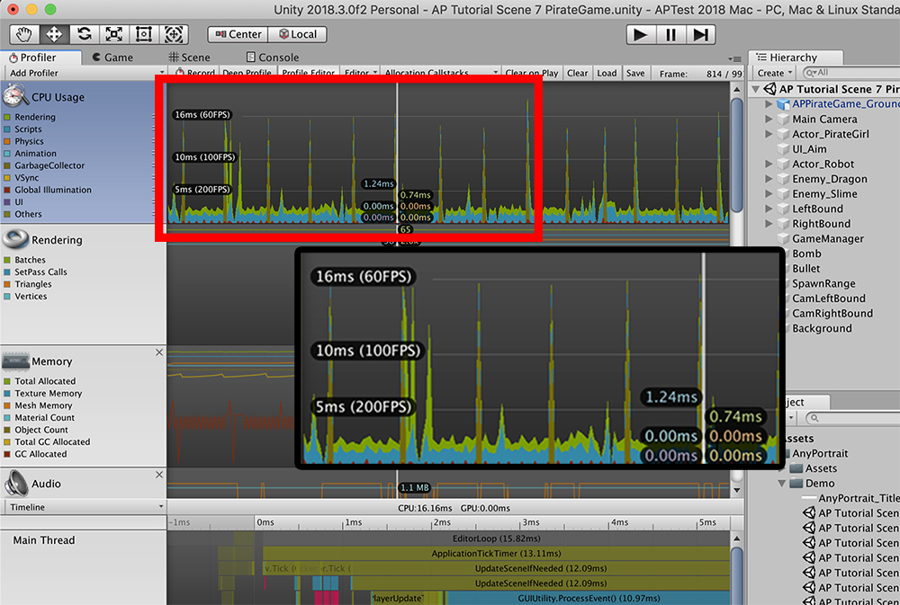

AnyPortrait > マニュアル > Macでエディタのパフォーマンスが低下
Macでエディタのパフォーマンスが低下
1.4.0
「Apple Silicon」のUnityバージョンによるパフォーマンスの違い
「Apple Silicon（M1、M2）」の発売に伴い、Mac環境でUnityエンジンのパフォーマンス問題がありました。
また、エディタの環境が「Metal」に固定されることで、以前と開発環境で多くの変化がありました。
幸いなことに、Unityで「Apple Silicon」のサポートを強化しながら、パフォーマンスが引き続き改善され、パフォーマンスに関するほとんどの問題が解決されました。
このページでは、「Apple M1」がインストールされているデバイスでテストした結果を見ることができます。

「Apple Silicon」がインストールされているMac環境でUnityエディタをインストールしたい場合は、上記のように「INTEL」バージョンと「SILICON」バージョンのエディタを表示できます。
テストしたデバイスのCPUは「Apple M1」で、両方のバージョンをサポートしています。
「Unity Editor」のバージョンによってAnyPortraitのパフォーマンスがどのように異なるかを見てみましょう。
（すべてのテスト環境は共通のデモキャラクターを開き、エディタを最大化した状態で統一しました。）

「Unity 2020 (Intel) 」バージョンで実行した結果です。
AnyPortraitエディタの「FPS」は「60」程度で記録されていることがわかります。
「Unity 2021 (Apple Silicon)」バージョンで実行した結果です。
AnyPortraitエディタの「FPS」は「Intel」バージョンに比べて大幅に増加し、「80」以上が記録されました。
「Unity 2022 (Apple Silicon)」バージョンで実行した結果です。
「Unity 2022」はまだベータ版であることを考えてみてください。
AnyPortraitエディタの「FPS」は、「2021年」版に比べてもう少し増加し、「90」前後に記録されます。
特に、Unity 2022からは、AnyPortraitなどのUnityプラグインを別々に「フルスクリーン」にすることができるため、エディタのパフォーマンスをもう少し向上させることができます。
以前のバージョンのMac OSである「Mojave」で「Metal」設定時に発生した「Stuttering問題」は、「Mac OS」と「Unity」エンジンのアップデートで解決されたことが確認されています。
以下の解決策は、以前の開発環境で効果的です。
「Metal」設定による「Stuttering」の問題と解決策（以前のバージョン）
macOS MojaveがインストールされてMac機器でUnityを実行するとき、AnyPortraitが数秒ごとに遅くなる現象があります。
この現象は、別名「Stuttering問題」と呼ばれます。
macOSのMojaveとUnityによって提供されるレンダリング方式である「Metal」がAnyPortraitでのパフォーマンスを低下させることができます。
たまにUnityを再実行する場合、この問題が解決されることがありますが、そうでなければ以下に紹介されている方法を用いてみてください。

「macOS Mojave」で駆動される「Unity 2018」でAnyPortraitエディタを実行した画面です。
このとき、測定されるFPSの値が高い状態でもエディタの実行性能が定期的に落ちる場合があります。

プロファイラを使用して、エディタのパフォーマンスを測定しました。
60 FPS以上で実行されるエディタの性能が2〜3秒ごとに15 FPSまで低下されることを見ることができます。

(1) 「Player Settings」画面を開きます。方法は、次のの二つがあります。
- メニューから「File > Build Settings」を開いて、「Player Settings...」ボタンを押します。
- メニューから「Edit > Project Settings」を開いて、「Player」メニューを選択します。
(2) 「Metal Editor Support *」をオフにします。
(3) 案内メッセージが表示されます。 「Apply」ボタンを押します。

「Metal Editor Support」設定がオフになるとUnityエディタが「Metal」から「OpenGL」で描画されることを見ることができます。

AnyPortraitを実行すれば、性能が低下する問題が解決されたことを見ることができます。
プロファイラーでAnyPortraitを測定してみると、少なくともフレームが60 FPSに改善されたことを見ることができます。
AnyPortraitエディタの性能について
RainyRizzleチームはAnyPortraitエディタの性能を向上させたい継続的に努力しています。
しかし、「UnityやOSのアップデート」、「開発環境の違い」のような要因によって、当社が予想していなかったパフォーマンスの問題が発生する可能性があります。
もし性能が低下する問題が発生した場合、いつでもお問い合わせを下さい。
- 問い合わせページ